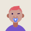

Consultores y expertos GRC certificados, especializados en normativa española y europea. Nuestro equipo reúne perfiles con certificaciones ISO 27001 Lead Auditor, CISM, CISA, CRISC y acreditaciones ENS, lo que nos permite acompañar proyectos de cualquier escala y sector. Conocemos el proceso desde dentro — muchos venimos del sector público y privado regulado.
Fundador de Avson. Define la estrategia de la firma y acompaña los proyectos más críticos. Su obsesión: convertir el cumplimiento en una ventaja de negocio real para el cliente, no en papeleo.
Responsable de las finanzas y de un crecimiento sostenible. Garantiza que cada proyecto y cada incorporación se apoyan en una base financiera sólida.
Lidera el desarrollo de negocio y las alianzas estratégicas. Conecta las necesidades del sector público y privado con la propuesta de valor de Avson.
Coordina la entrega de proyectos de certificación de principio a fin. Ha liderado implantaciones en administraciones públicas y empresas TIC.
Especializado en DORA y NIS2. Trabaja principalmente con empresas con dependencia tecnológica y proveedores de infraestructuras críticas que necesitan adaptarse a la regulación europea.
Auditora acreditada de ENS. Conoce el proceso desde el lado del auditor, lo que le permite preparar a los clientes de forma muy precisa para superar la certificación.
Su foco es el análisis de riesgos y la implantación de sistemas de gestión de seguridad de la información. Trabaja con pymes y empresas medianas del sector tecnológico.

Diseña planes de continuidad y recuperación ante desastres. Ha trabajado con organizaciones de sectores críticos donde la disponibilidad no es negociable.
Se encarga de la parte técnica de las implementaciones: controles de seguridad, arquitectura, análisis de vulnerabilidades y gestión de evidencias para auditoría.
Especializada en regulación europea. Asesora a empresas del cadenas de suministro y empresas tecnológicas en el cumplimiento de NIS2, DORA y otras normativas europeas.
Responsable de la documentación técnica y la configuración de controles. Apoya a los clientes durante todo el proceso de implantación hasta la auditoría.
Diseña y entrega los programas de formación y los webinars de Avson. Se asegura de que los equipos de los clientes entiendan la normativa y estén preparados para la auditoría.
Monitoriza los cambios normativos europeos y adapta el enfoque de los proyectos en curso. Es el punto de referencia del equipo en materia regulatoria.
Elabora análisis de riesgos, informes de cumplimiento y cuadros de mando para los clientes. Lleva el seguimiento del estado de certificación de cada proyecto.
Acompaña a empresas TIC proveedoras de la Administración en todo el proceso ENS, desde la categorización del sistema hasta la salida de la auditoría.
Avson es un equipo especializado, no una consultora de propósito general. Esa especialización tiene un precio — no hacemos de todo — pero también tiene una ventaja clara: cuando nos contratas para un proyecto GRC, estás trabajando con las personas que más proyectos de ese tipo han hecho en España.
Cada cliente tiene un consultor asignado que conoce el proyecto de principio a fin. No cambiamos de equipo a mitad del proceso. No tienes que repetir el contexto cada vez que llamas. El consultor que arranca el proyecto es el que lo termina. Esa continuidad se nota en la calidad del resultado y en la velocidad de ejecución.
Sabemos lo que te pides desde el primer día y te decimos si es alcanzable en tu plazo y con tu presupuesto. Si algo no es posible, te lo decimos antes de firmar, no tres meses después cuando ya has pagado la mitad. La honestidad sobre lo que es factible es el principio de todo proyecto que acaba bien.
No firmamos ningún contrato de certificación sin incluir la garantía de éxito en la auditoría. Si siguiendo nuestra metodología no superamos la primera auditoría, cubrimos la segunda sin coste adicional. Es nuestra forma de alinear intereses: si tú no te certificas, nosotros no cobramos el proyecto completo. No podría ser más claro.
El objetivo no es entregarte el certificado y desaparecer. El objetivo es ser tu equipo GRC de referencia a medida que tu empresa crece y añade marcos regulatorios. La mayoría de nuestros clientes repiten con nosotros: el segundo proyecto es más rápido, más barato y mejor que el primero porque ya nos conocemos.
Un consultor GRC debe conocer la normativa que implementa desde dentro. Nuestro equipo mantiene activas certificaciones profesionales de referencia que garantizan que el conocimiento técnico está siempre al día.
Auditoría de sistemas de gestión de seguridad de la información
IRCA / CQI
Implementación de sistemas de gestión de continuidad de negocio
PECB
Gobierno de la seguridad de la información a nivel directivo
ISACA
Auditoría de sistemas de información y control
ISACA
Gestión del riesgo en sistemas de información empresariales
ISACA
Seguridad en entornos cloud y servicios en la nube
(ISC)²
Hacking ético y pruebas de penetración
EC-Council
Acreditación ENAC para auditorías oficiales del Esquema Nacional de Seguridad
ENAC / CCN
Si nuestro equipo lleva tu proyecto y no supera la auditoría de certificación, la repetimos sin coste adicional. Sin letras pequeñas. Por escrito desde el primer día.